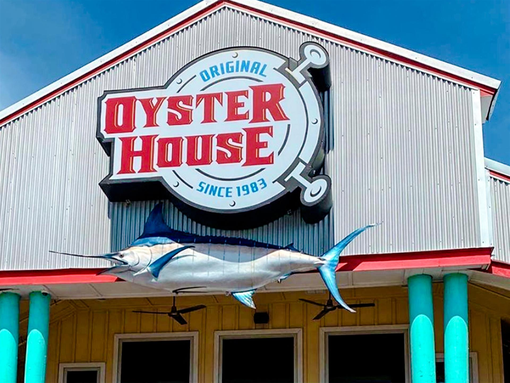

Explore the Best Restaurants in Orange Beach, Alabama
Welcome to Orange Beach, Alabama – where delicious dining experiences meet stunning coastal views. Whether you're craving fresh seafood, southern comfort food, or international flavors, Orange Beach has something to satisfy every palate. Known for its vibrant culinary scene, this charming beach town is home to a wide range of dining options that cater to families, foodies, and everyone in between.
Fresh, Local Seafood
Orange Beach is a seafood lover’s paradise. The town is surrounded by the Gulf of Mexico, offering a bounty of fresh fish, shrimp, oysters, and more. Local restaurants pride themselves on serving seafood that's straight from the waters to your plate. Popular spots like The Gulf offer casual, open-air dining with spectacular views, while Fisher's at Orange Beach Marina offers a more refined seafood experience in an upscale atmosphere.

Southern Comfort & Southern Hospitality
For those who want to experience the heart and soul of the South, Orange Beach delivers with its delicious comfort food. From classic shrimp and grits to mouthwatering fried chicken, local restaurants like The Original Oyster House and LuLu's (founded by Jimmy Buffett's sister) bring the flavors of the Gulf Coast straight to your table. Expect a welcoming atmosphere and service that makes you feel like family.
